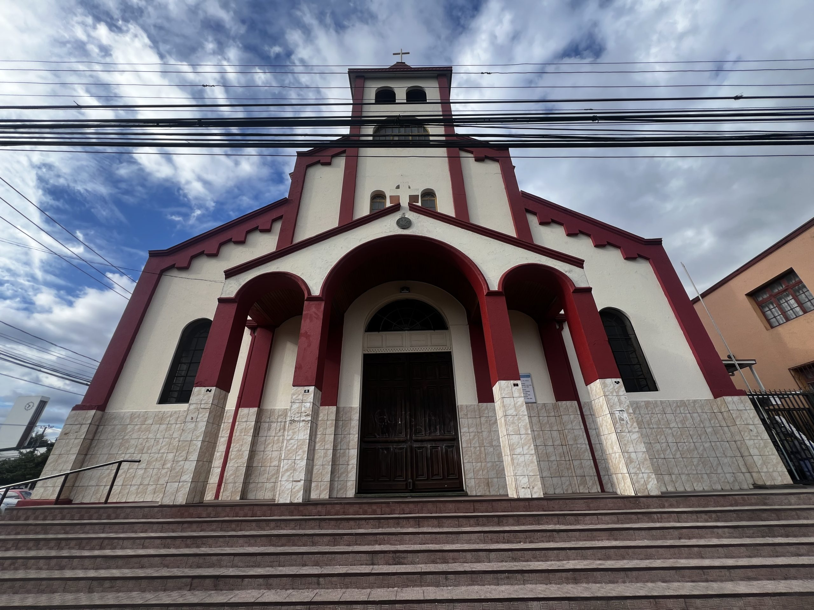

Paz y Bien en nuestra Comunidad
Un espacio de fe, encuentro y fraternidad franciscana en pleno corazón de Temuco. Sean bienvenidos a nuestra casa.
Centro Pastoral
Busca y accede rápidamente a los horarios, trámites e información de nuestra parroquia en Temuco.
Misas y Confesiones
Horarios de celebraciones litúrgicas, sacramentos de reconciliación y adoración al Santísimo Sacramento en nuestro templo principal de Manuel Montt.
Sacramentos
Información, charlas de preparación y requisitos indispensables para celebrar los santos sacramentos de nuestra fe católica junto a la comunidad.
Despacho y Secretaría
Trámites y certificados con nuestra secretaria Sra. Sandra Lagos Balboa, y asistencia del Párroco Pbro. Leonardo Villagrán Santana y Diácono Don Marcelo Schmeisser Nicklitschek.
Sede Parroquial (Templo)
Nuestro emblemático templo parroquial une elementos neoclásicos y góticos, un monumento abierto para la oración silenciosa.
Calendario Litúrgico
Explora las temporadas eclesiásticas y descubre el color y las lecturas bíblicas correspondientes a cada día de devoción.
Selecciona un día del calendario para visualizar sus lecturas bíblicas y temporada litúrgica.
Guía de Colores Litúrgicos
Misiones y Vida Comunitaria
Nuestra parroquia extiende su labor franciscana a través de importantes áreas de acogida social y crecimiento espiritual.

Hogar Ntra. Señora del Carmen
Casa de acogida dedicada al cuidado integral y digno de adultos mayores vulnerables. Conoce cómo apoyar como voluntario o a través de aportes solidarios directos.

Café Fraterno
Cada semana acogemos a hermanos y hermanas en situación de calle, brindándoles alimentación caliente, abrigo y una mano fraterna de escucha sincera en comunidad.
OFS (Franciscanos Seglares)
Comunidad de laicos y clérigos seglares que viven el Evangelio de Jesucristo a ejemplo de San Francisco de Asís, promoviendo la paz, la ecología y la fraternidad universal.

Grupo Scout "San Francisco"
Formación de niños, niñas y jóvenes en valores cristianos, autonomía y amor por el cuidado de la creación, mediante actividades al aire libre los días sábados.
Grupo Bíblico Isaías
Comunidad dedicada al estudio, oración y profundización de los textos de los profetas y del Antiguo Testamento para iluminar nuestra vida diaria.
Grupo Bíblico Santiago Apóstol
Espacio de lectura guiada centrado en el Nuevo Testamento, las cartas apostólicas y su aplicación en la fe activa, caridad y servicio parroquial.
Muro de Noticias y Redes
Entérate al instante de nuestras novedades. Publicaciones en vivo y boletines desde nuestros canales oficiales.
Novedades y Boletines
¡Alegres en el Señor! Compartimos imágenes de la renovada fachada de nuestro histórico Templo Parroquial (Manuel Montt 39, Temuco). Un trabajo en comunidad para resguardar nuestro valioso monumento eclesial. ¡Paz y Bien a todos!
Ver Publicación →Atención jóvenes: recordamos que están abiertas las fichas de postulación para el Grupo Scout "San Francisco" en todos sus rangos de edad. Actividades al aire libre y campamento formativo cada sábado. ¡Llenemos de vida los salones!
Ver Publicación →El Café Fraterno sigue adelante gracias a sus aportes. Esta semana necesitamos recolectar embutidos, pan, té y azúcar en la Secretaría Parroquial para atender a nuestros hermanos de la calle. ¡Tu generosidad es Cristo que nos abraza!
Ver Publicación →Nuestras redes sociales
Comunidades Eclesiales de Base (CEB)
Nuestra parroquia extiende su calor misionero a través de capillas barriales. Encuentra tu comunidad más cercana.
CEB Ntra. Señora de los Ángeles
Lugar entrañable de oración y encuentro. Ubicada en Monte Ararat esq. Getsemaní, Villa San Andrés.
CEB Ntra. Señora de Fátima
Comunidad unida y activa en su vecindario. Ubicada en José del Rosario Muñoz Nº 427, Pichi Cautín.
CEB San Antonio de Padua
Celebración comunitaria e inspiradora. Ubicada en Camino Monteverde.